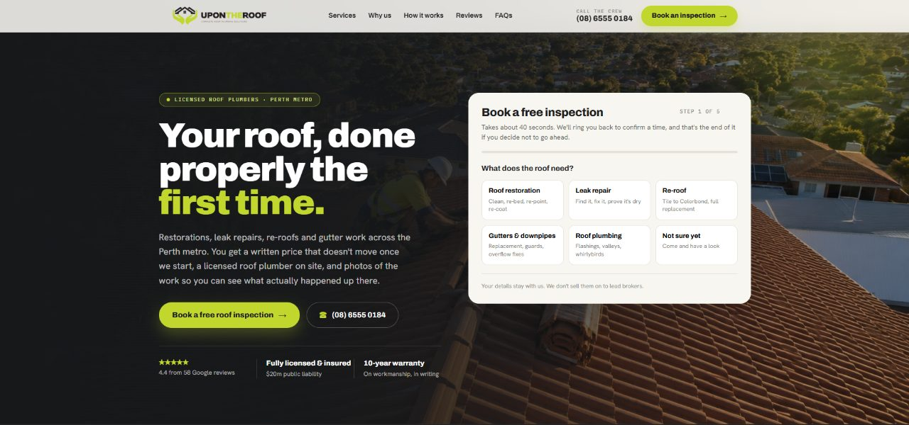

Roofing website design in Tauranga: coastal homes, fast growth and kiwifruit sheds
Tauranga is growing fast, with a long coastline and a horticulture industry full of large roofs. A roofer's website should speak to all three.

Tauranga roofing websites should cover three kinds of work separately: coastal homes at the Mount and Papamoa, new builds in the growth areas, and commercial roofs for packhouses and coolstores. Add area pages from Ōmokoroa to Te Puke and make your LBP details easy to find.
Tauranga has grown quickly for years. New subdivisions keep spreading through Papamoa, Pyes Pa, The Lakes and Ōmokoroa, and many people moving to the Bay of Plenty buy older homes near the coast and renovate them. Add the kiwifruit and avocado industry, with its packhouses and coolstores, and roofers here can take on more kinds of work than most.
01What do coastal homeowners at the Mount need to know?
Homes along the coast, from Mount Maunganui through Papamoa Beach, deal with salt spray and onshore wind. That shortens the life of fixings, flashings and spouting, and some roofing materials suit the coast better than others. Homeowners there want a roofer who knows which ones.
A page on coastal roofing should cover:
- Which materials and fasteners you recommend close to the sea, and why.
- How often coastal roofs should be washed and checked.
- Photos of coastal jobs you have done, with the suburb named.
Older beach houses add another layer. Many have been extended several times, with different roof pitches and materials joined together, and those joins are a common place for leaks. Photos of a tricky junction you have fixed on a Papamoa or Mount job are more convincing than a paragraph of claims.
02New builds and the growth areas
A good share of Tauranga roofing work comes through builders on new homes. If that is a big share of your business, make it easy for builders to see your capacity and the developments you have worked in. Homeowners in those areas also search for roofers once their homes are a few years old and need repairs, spouting work or a solar install that requires roof flashings.
Area pages help both audiences:
- Mount Maunganui and Papamoa: coastal homes and many newer subdivisions.
- Central Tauranga: Otūmoetai, Brookfield, Gate Pā, Greerton.
- Western growth areas: Bethlehem, Pyes Pa, The Lakes, Tauriko.
- Northern corridor: Ōmokoroa, Te Puna, Katikati.
- Te Puke and the eastern Bay of Plenty.
Builders often value reliability above price. A short line on how far ahead you book and how you handle variations on site tells them what working with you will be like.
03Should a Tauranga roofer show commercial work?
Kiwifruit and avocado growing around Te Puke and the western Bay means packhouses, coolstores and large sheds. Their roofs are big, and owners care about timing because work has to fit around harvest and packing seasons. If you do commercial roofing, a separate section with project photos, safety information and a short note on scheduling around the season is worth adding.

04What Tauranga roofing sites usually miss
- No separation between residential, new build and commercial work.
- No coastal roofing information, even from roofers based at the Mount.
- Growth areas missing from the service list, so people in Ōmokoroa or Pyes Pa are not sure you cover them.
- LBP details hard to find.
- Old photos that do not reflect the size or type of work the business now does.
05Common questions
Should commercial work have its own section?
If you do packhouse, coolstore or other commercial roofing, yes. Commercial clients look for different things, like safety systems, scale and scheduling, and they want to see similar projects. Put the project photos first, then the safety and scheduling detail.
Do builders look at a roofer's website?
Some do before they add a new subcontractor. A clear page showing new build work, capacity and the developments you have worked in makes that check easy. Keep the page short, with a named contact and a line on how far ahead you book.
How often should coastal roofs be washed?
Roofs close to the sea benefit from a rinse every few months in spots rain does not reach, like under eaves and around flashings. Some manufacturers attach conditions to their warranties, so it is worth checking them and saying so on your site.
What should a commercial roofing page include?
Photos of similar buildings, the size of jobs you handle, your safety approach and how you schedule around harvest and packing. A named contact for commercial work also helps. A short note on how a commercial enquiry is handled saves time on both sides.
Is solar flashing work worth a page?
If you do it, yes. Plenty of homes in the Bay of Plenty are adding solar, and the roof penetrations need proper flashing. Homeowners and solar installers both search for it.
If you run a roofing business in Tauranga or the Bay of Plenty, send a short brief and I will reply with what I would change first. For an inland comparison, the Hamilton guide covers residential and rural work in the Waikato.